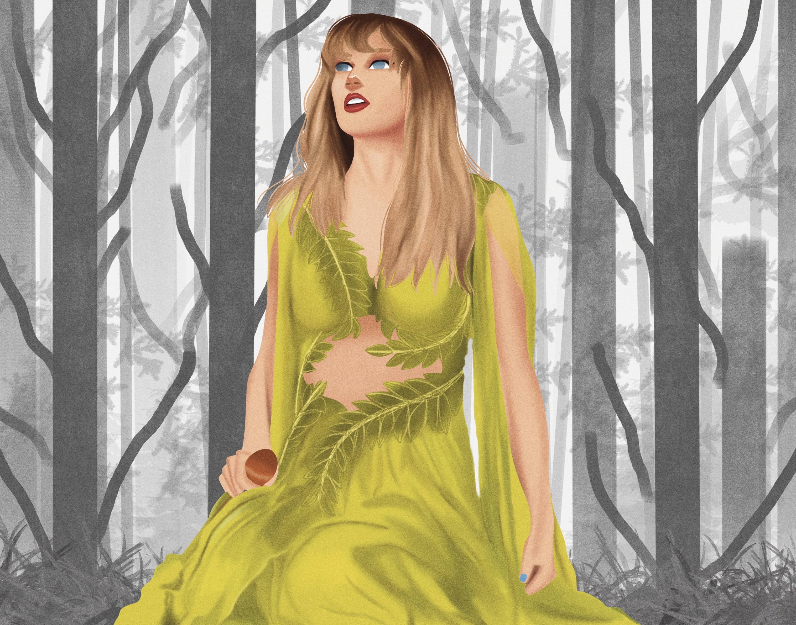
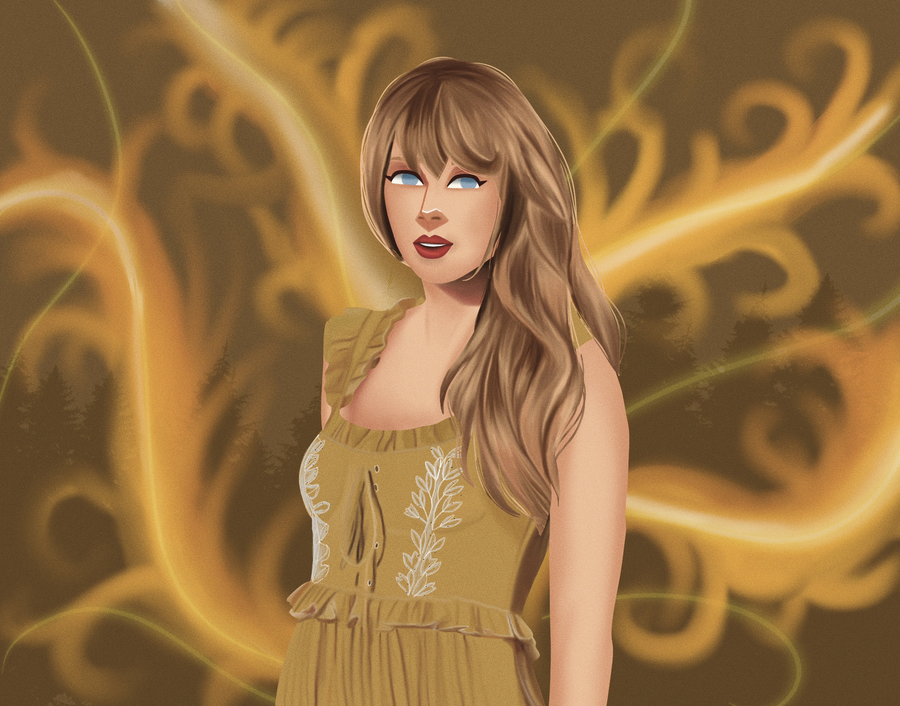
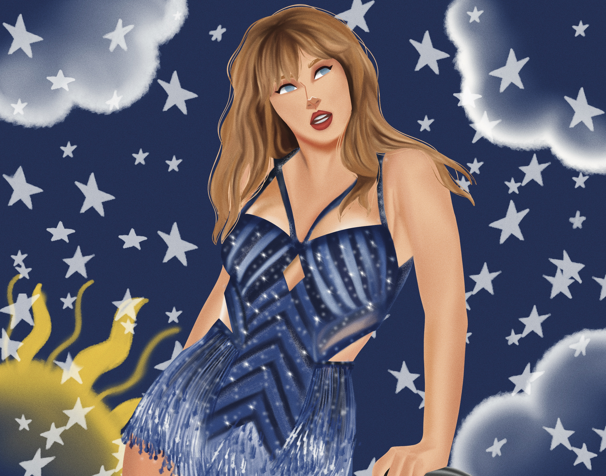
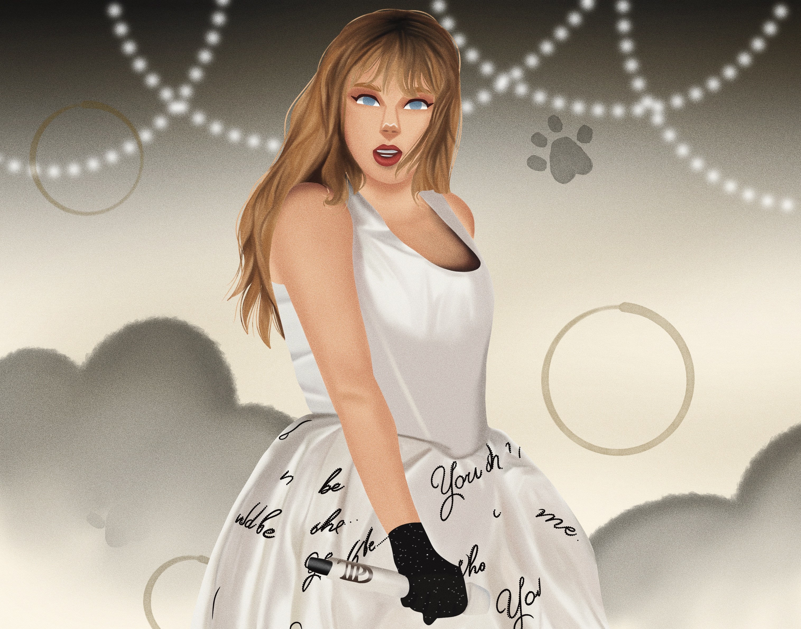

FEMALE RAGE
Flolklore - Evermore - Midnights - TTPD
FOLKLORE
Durante la pandemia, Taylor sorprendió con Folklore, un giro hacia el indie y lo acústico. Abandonó el pop para sumergirse en un mundo de cuentos, personajes ficticios y melancolía. La producción minimalista, junto a Aaron Dessner y Jack Antonoff, le dio una nueva dimensión artística. Cardigan, Exile y August son ejemplos del tono introspectivo y poético del álbum.
EVERMORE
Lanzado pocos meses después de Folklore, Evermore continuó la estética indie-folk pero con una perspectiva ligeramente más experimental y diversa. Es considerado el “hermano” de Folklore, con letras igualmente introspectivas, pero musicalmente más arriesgadas. Canciones como Champagne Problems y Willow mostraron una Taylor cómoda explorando nuevos territorios.
MIDNIGHTS
Midnights representó un regreso al pop introspectivo con una estética nocturna, glam y emocionalmente ambigua. Las canciones exploran temas como la ansiedad, la ambición, el amor y los pensamientos que te mantienen despierto en la madrugada. Fue un álbum conceptual con una producción moderna y sofisticada. Anti-Hero se convirtió en uno de sus mayores éxitos globales.
THE TORTURED POETS DEPARMENT
Esta era es una mezcla poética de confesiones, nostalgia y duelo emocional. Con una narrativa lírica profunda y compleja, Taylor explora la tristeza, la pérdida, el sarcasmo y la autocrítica. El sonido alterna entre lo experimental, lo minimalista y lo teatral. Es considerada una de sus eras más vulnerables y literarias, combinando arte y catarsis.